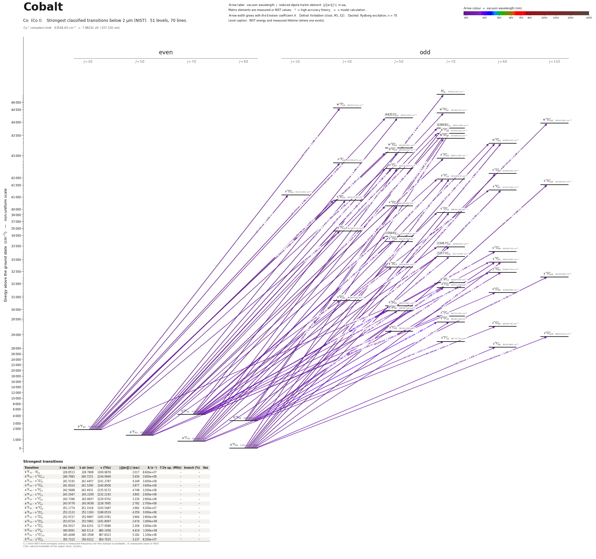

Cobalt energy level diagram
Energy levels and transitions of neutral cobalt (Co I): the 70 strongest classified lines below 2 µm from the NIST Atomic Spectra Database and the 51 levels they connect, each line with its vacuum wavelength, frequency and, for 70 of them, the reduced dipole matrix element derived from the NIST transition rate. Measured lifetimes, transition rates, hyperfine constants and isotope shifts from the literature are included, each with its citation.
Hover a line or a level to isolate it, click to keep it selected. Scroll to zoom, drag to move.

Download: diagram (PDF) diagram (SVG) transitions (CSV) levels (CSV) source code

Strongest transitions of cobalt
| Transition | λ vac (nm) | λ air (nm) | ν (THz) | |⟨J‖er‖J′⟩| (ea₀) | A (s⁻¹) | Γ/2π up. (MHz) | branch (%) | Use |
|---|---|---|---|---|---|---|---|---|
| a 4F3/2 – w 4F°3/2 | 233.9379 | 233.8662 | 1281.5042 | 1.525 | 9.200e+07 | 36.17 | 40.5 | |
| a 4F9/2 – x 4G°11/2 | 240.7983 | 240.7251 | 1244.9940 | 6.391 | 4.940e+08 | 79.58 | 98.8 | |
| a 4F5/2 – x 4G°7/2 | 241.5191 | 241.4457 | 1241.2787 | 4.856 | 4.240e+08 | 75.79 | 89 | |
| a 4F3/2 – x 4G°5/2 | 241.6024 | 241.5290 | 1240.8506 | 3.999 | 3.830e+08 | 69.2 | 88.1 | |
| a 4F9/2 – x 4F°9/2 | 242.5668 | 242.4931 | 1235.9172 | 5.112 | 3.710e+08 | 63.66 | 92.8 | |
| a 4F7/2 – x 4F°7/2 | 243.2947 | 243.2209 | 1232.2193 | 4.259 | 3.190e+08 | 58.95 | 86.1 | |
| a 4F5/2 – x 4F°5/2 | 243.7396 | 243.6657 | 1229.9702 | 3.313 | 2.560e+08 | 56.84 | 71.7 | |
| a 4F3/2 – x 4F°3/2 | 243.9778 | 243.9038 | 1228.7695 | 2.838 | 2.810e+08 | 54.88 | 81.5 | |
| b 4F9/2 – w 4F°9/2 | 251.1774 | 251.1018 | 1193.5487 | 2.653 | 9.000e+07 | 28.42 | 50.4 | |
| a 4F9/2 – x 4D°7/2 | 252.2122 | 252.1363 | 1188.6519 | 4.242 | 2.840e+08 | 51.34 | 88 | |
| a 4F7/2 – x 4D°5/2 | 252.9727 | 252.8967 | 1185.0781 | 3.537 | 2.610e+08 | 49.74 | 83.5 | |
| a 4F5/2 – x 4D°3/2 | 253.6724 | 253.5961 | 1181.8097 | 2.723 | 2.300e+08 | 46.81 | 78.2 | |
| a 4F3/2 – x 4D°1/2 | 254.5017 | 254.4253 | 1177.9586 | 2.150 | 2.840e+08 | 46.81 | 96.6 | |
| b 4F9/2 – y 4F°9/2 | 340.6091 | 340.5114 | 880.1658 | 4.674 | 1.120e+08 | 23.07 | 77.3 | |
| b 4F9/2 – y 4G°11/2 | 345.4498 | 345.3508 | 867.8323 | 5.677 | 1.320e+08 | 21.51 | 97.7 | |
| b 4F7/2 – y 4D°5/2 | 350.7315 | 350.6312 | 854.7635 | 3.484 | 9.500e+07 | 18.29 | 82.7 |
λ, ν from NIST level energies unless a measured frequency for this isotope is available. A: measured value or NIST. Γ/2π: natural linewidth of the upper level, 1/(2πτ).
59Co hyperfine structure (I = 7/2)
| Level | A (MHz) | B (MHz) | Shift of each F level from the centre of gravity (MHz) |
|---|---|---|---|
| a 4F9/2 | 450.2835(9) | 139.22(3) | F=1: -8604.15 F=2: -7723.47 F=3: -6398.31 F=4: -4623.69 F=5: -2392.99 F=6: +302.08 F=7: +3471.47 F=8: +7126.77 |
| a 4F7/2 | 490.5678(21) | 94.50(3) | F=0: -7675.82 F=1: -7194.90 F=2: -6231.12 F=3: -4780.62 F=4: -2837.64 F=5: -394.44 F=6: +2558.61 F=7: +6033.08 |
| a 4F5/2 | 613.348(3) | 67.54(6) | F=1: -6863.99 F=2: -5656.59 F=3: -3838.25 F=4: -1400.30 F=5: +1668.86 F=6: +5383.68 |
| a 4F3/2 | 1042.9828(9) | 67.618(18) | F=2: -7003.91 F=3: -3923.26 F=4: +229.35 F=5: +5492.56 |
| b 4F9/2 | 828.800(3) | -118.7(3) | F=1: -16008.82 F=2: -14334.26 F=3: -11825.95 F=4: -8488.14 F=5: -4326.47 F=6: +651.99 F=7: +6438.75 F=8: +13023.92 |
| b 4F7/2 | 668.918(3) | -79.23(21) | F=0: -10577.91 F=1: -9900.90 F=2: -8548.51 F=3: -6523.97 F=4: -3832.13 F=5: -479.45 F=6: +3525.97 F=7: +8174.44 |
| z 4F°9/2 | 810.0(24) | -60.000 | F=1: -15620.77 F=2: -13992.12 F=3: -11550.93 F=4: -8299.34 F=5: -4240.21 F=6: +622.89 F=7: +6285.67 F=8: +12743.13 |
| z 4F°7/2 | 655.4(24) | 30.000 | F=0: -10305.69 F=1: -9653.40 F=2: -8348.21 F=3: -6388.90 F=4: -3773.62 F=5: -499.93 F=6: +3435.23 F=7: +8035.54 |
| z 4G°11/2 | 772.0(21) | 210.000 | F=2: -17475.45 F=3: -15193.91 F=4: -12144.21 F=5: -8319.81 F=6: -3712.54 F=7: +1687.43 F=8: +7891.56 F=9: +14912.92 |
| z 4F°5/2 | 559.1(21) | 30.000 | F=1: -6273.92 F=2: -5164.27 F=3: -3496.58 F=4: -1267.00 F=5: +1529.62 F=6: +4899.71 |
| z 4G°9/2 | 517.1(27) | 180.000 | F=1: -9872.44 F=2: -8863.88 F=3: -7345.67 F=4: -5311.40 F=5: -2752.49 F=6: +341.78 F=7: +3984.26 F=8: +8189.95 |
| z 4D°7/2 | 751.0(27) | – | F=0: -11827.93 F=1: -11076.95 F=2: -9575.00 F=3: -7322.06 F=4: -4318.14 F=5: -563.24 F=6: +3942.64 F=7: +9199.50 |
| z 4G°7/2 | 448.2(15) | 150.000 | F=0: -6978.64 F=1: -6545.75 F=2: -5676.92 F=3: -4366.03 F=4: -2603.88 F=5: -378.23 F=6: +2326.21 F=7: +5527.83 |
| z 4D°5/2 | 696.1(27) | 30.000 | F=1: -7815.28 F=2: -6431.61 F=3: -4352.89 F=4: -1575.27 F=5: +1906.40 F=6: +6098.55 |
| z 4G°5/2 | 398.4(18) | 150.000 | F=1: -4401.87 F=2: -3647.89 F=3: -2500.84 F=4: -941.45 F=5: +1056.01 F=6: +3523.68 |
| z 4D°3/2 | 705(6) | 30.000 | F=2: -4739.37 F=3: -2647.27 F=4: +162.20 F=5: +3706.18 |
| z 2G°9/2 | 495(3) | – | F=1: -9522.20 F=2: -8532.89 F=3: -7048.90 F=4: -5070.27 F=5: -2596.97 F=6: +371.00 F=7: +3833.61 F=8: +7790.90 |
| z 2F°7/2 | 448.8(18) | 180.000 | F=0: -6972.01 F=1: -6541.59 F=2: -5677.07 F=3: -4371.11 F=4: -2612.68 F=5: -387.10 F=6: +2324.01 F=7: +5542.68 |
| y 4D°7/2 | 478.2(24) | 150.000 | F=0: -7450.82 F=1: -6987.96 F=2: -6059.17 F=3: -4658.33 F=4: -2776.26 F=5: -400.72 F=6: +2483.61 F=7: +5895.08 |
| y 4G°11/2 | 300(6) | – | F=2: -6820.22 F=3: -5920.85 F=4: -4721.69 F=5: -3222.74 F=6: -1424.00 F=7: +674.53 F=8: +3072.85 F=9: +5770.96 |
| y 4G°9/2 | 334.3(27) | – | F=1: -6434.70 F=2: -5766.16 F=3: -4763.35 F=4: -3426.27 F=5: -1754.92 F=6: +250.70 F=7: +2590.59 F=8: +5264.75 |
| y 4D°5/2 | 465(6) | – | F=1: -5227.65 F=2: -4298.29 F=3: -2904.25 F=4: -1045.53 F=5: +1277.87 F=6: +4065.95 |
| y 4F°9/2 | 297(3) | 240.000 | F=1: -5603.21 F=2: -5043.91 F=3: -4197.83 F=4: -3056.38 F=5: -1608.15 F=6: +161.16 F=7: +2268.69 F=8: +4734.44 |
| (33173)°7/2 | 508.1(21) | – | F=0: -8003.36 F=1: -7495.21 F=2: -6478.91 F=3: -4954.46 F=4: -2921.86 F=5: -381.11 F=6: +2667.79 F=7: +6224.84 |
| y 2G°9/2 | 441.6(18) | – | F=1: -8500.61 F=2: -7617.43 F=3: -6292.66 F=4: -4526.30 F=5: -2318.35 F=6: +331.19 F=7: +3422.32 F=8: +6955.04 |
| (33467)°7/2 | 387(6) | – | F=0: -6091.00 F=1: -5704.27 F=2: -4930.81 F=3: -3770.62 F=4: -2223.70 F=5: -290.05 F=6: +2030.33 F=7: +4737.44 |
| y 4G°5/2 | 804.9(27) | -120.000 | F=1: -9119.86 F=2: -7475.69 F=3: -5022.30 F=4: -1775.12 F=5: +2245.30 F=6: +7013.23 |
| (33946)°5/2 | 603(3) | – | F=1: -6779.02 F=2: -5573.86 F=3: -3766.12 F=4: -1355.81 F=5: +1657.10 F=6: +5272.57 |
| y 4F°3/2 | 1190.8(24) | -60.000 | F=2: -8070.04 F=3: -4454.79 F=4: +325.56 F=5: +6236.70 |
| x 4D°7/2 | 303.7(21) | – | F=0: -4783.12 F=1: -4479.43 F=2: -3872.05 F=3: -2960.98 F=4: -1746.22 F=5: -227.77 F=6: +1594.37 F=7: +3720.20 |
| x 4D°5/2 | 355.2(27) | 30.000 | F=1: -3980.49 F=2: -3278.56 F=3: -2222.45 F=4: -808.31 F=5: +969.01 F=6: +3115.94 |
| x 4D°3/2 | 528(6) | – | F=2: -3561.50 F=3: -1978.61 F=4: +131.91 F=5: +2770.06 |
| x 4D°1/2 | 1673(9) | – | F=3: -3763.80 F=4: +2927.40 |
| x 4F°9/2 | 441(6) | – | F=1: -8483.28 F=2: -7601.90 F=3: -6279.83 F=4: -4517.07 F=5: -2313.62 F=6: +330.52 F=7: +3415.35 F=8: +6940.87 |
| x 4G°11/2 | 237(6) | 240.000 | F=2: -5288.84 F=3: -4617.59 F=4: -3713.87 F=5: -2570.19 F=6: -1177.20 F=7: +476.32 F=8: +2403.45 F=9: +4619.17 |
| x 4F°7/2 | 513(6) | – | F=0: -8074.24 F=1: -7561.59 F=2: -6536.29 F=3: -4998.34 F=4: -2947.74 F=5: -384.49 F=6: +2691.41 F=7: +6279.96 |
| x 4G°9/2 | 330(9) | – | F=1: -6348.07 F=2: -5688.53 F=3: -4699.22 F=4: -3380.14 F=5: -1731.29 F=6: +247.33 F=7: +2555.72 F=8: +5193.88 |
| x 4F°5/2 | 660(24) | – | F=1: -7419.82 F=2: -6100.74 F=3: -4122.12 F=4: -1483.96 F=5: +1813.73 F=6: +5770.98 |
| x 4F°3/2 | 1019(9) | – | F=2: -6880.27 F=3: -3822.38 F=4: +254.82 F=5: +5351.32 |
| x 4G°7/2 | 537(27) | – | F=0: -8451.92 F=1: -7915.29 F=2: -6842.03 F=3: -5232.14 F=4: -3085.62 F=5: -402.47 F=6: +2817.31 F=7: +6573.72 |
| x 4G°5/2 | 929(9) | – | F=1: -10455.30 F=2: -8596.58 F=3: -5808.50 F=4: -2091.06 F=5: +2555.74 F=6: +8131.90 |
| w 4D°5/2 | 681(6) | 60.000 | F=1: -7623.82 F=2: -6279.90 F=3: -4257.60 F=4: -1549.19 F=5: +1855.60 F=6: +5969.64 |
| w 4F°9/2 | 983(6) | -150.000 | F=1: -18997.66 F=2: -17009.59 F=3: -14031.95 F=4: -10070.10 F=5: -5131.18 F=6: +775.88 F=7: +7640.37 F=8: +15449.79 |
| w 4D°7/2 | 711(6) | – | F=0: -11190.53 F=1: -10480.02 F=2: -9059.00 F=3: -6927.47 F=4: -4085.43 F=5: -532.88 F=6: +3730.18 F=7: +8703.75 |
| x 2F°7/2 | 711(9) | -150.000 | F=0: -11270.89 F=1: -10545.07 F=2: -9096.50 F=3: -6931.30 F=4: -4058.65 F=5: -490.79 F=6: +3756.96 F=7: +8666.25 |
| (43848)°7/2 | 779(3) | – | F=0: -12276.50 F=1: -11497.03 F=2: -9938.11 F=3: -7599.73 F=4: -4481.90 F=5: -584.60 F=6: +4092.16 F=7: +9548.39 |
| w 4G°11/2 | 982.1(27) | -150.000 | F=2: -22405.28 F=3: -19434.37 F=4: -15478.62 F=5: -10542.69 F=6: -4632.44 F=7: +2245.13 F=8: +10081.83 F=9: +18868.31 |
| (44202)°5/2 | 660(24) | – | F=1: -7419.82 F=2: -6100.74 F=3: -4122.12 F=4: -1483.96 F=5: +1813.73 F=6: +5770.98 |
| w 4G°7/2 | 546(12) | – | F=0: -8593.51 F=1: -8047.90 F=2: -6956.65 F=3: -5319.80 F=4: -3137.32 F=5: -409.21 F=6: +2864.51 F=7: +6683.85 |
| w 4F°3/2 | 435(9) | 180.000 | F=2: -2837.80 F=3: -1662.27 F=4: +25.10 F=5: +2327.18 |
Measured A, B constants; sources in the data file.
Listed Co transitions below 2 µm
| Lower level | Upper level | λ vacuum (nm) | λ air (nm) | ν (THz) | Type | |⟨J‖er‖J′⟩| (ea₀) | A (s⁻¹) | Branching (%) | Source of matrix element / A |
|---|---|---|---|---|---|---|---|---|---|
| b 4F7/2 | 6°7/2 | 228.8513 | 228.7808 | 1309.9878 | E1 | 2.017 NIST | 8.600e+07 NIST | 97.2 | NIST ASD (accuracy D) |
| a 4F9/2 | x 2F°7/2 | 229.5936 | 229.5229 | 1305.7526 | E1 (intercombination) | 1.095 measured | 2.510e+07 measured | 21.6 | Lawler, Sneden, Cowan, Astrophys. J. Suppl. Ser. 220, 13 (2015), Table 3 |
| a 4F9/2 | w 4F°9/2 | 230.9718 | 230.9008 | 1297.9610 | E1 | 1.973 measured | 6.400e+07 measured | 35.8 | Lawler, Sneden, Cowan, Astrophys. J. Suppl. Ser. 220, 13 (2015), Table 3 |
| a 4F7/2 | (43848)°7/2 | 232.3853 | 232.3140 | 1290.0663 | E1 | 1.710 measured | 5.900e+07 measured | 34.8 | Lawler, Sneden, Cowan, Astrophys. J. Suppl. Ser. 220, 13 (2015), Table 3 |
| a 4F5/2 | w 4G°7/2 | 232.6251 | 232.5537 | 1288.7367 | E1 | 0.683 measured | 9.400e+06 measured | 21.9 | Lawler, Sneden, Cowan, Astrophys. J. Suppl. Ser. 220, 13 (2015), Table 3 |
| a 4F5/2 | (44202)°5/2 | 233.6717 | 233.6001 | 1282.9642 | E1 | 1.493 measured | 5.900e+07 measured | 31.9 | Lawler, Sneden, Cowan, Astrophys. J. Suppl. Ser. 220, 13 (2015), Table 3 |
| a 4F3/2 | w 4F°3/2 | 233.9379 | 233.8662 | 1281.5042 | E1 | 1.525 measured | 9.200e+07 measured | 40.5 | Lawler, Sneden, Cowan, Astrophys. J. Suppl. Ser. 220, 13 (2015), Table 3 |
| a 4F7/2 | w 4F°9/2 | 235.4087 | 235.3366 | 1273.4980 | E1 | 1.005 measured | 1.570e+07 measured | 8.79 | Lawler, Sneden, Cowan, Astrophys. J. Suppl. Ser. 220, 13 (2015), Table 3 |
| a 4F5/2 | (43848)°7/2 | 235.6204 | 235.5484 | 1272.3534 | E1 | 0.874 measured | 1.480e+07 measured | 8.73 | Lawler, Sneden, Cowan, Astrophys. J. Suppl. Ser. 220, 13 (2015), Table 3 |
| a 4F3/2 | (44202)°5/2 | 235.8903 | 235.8182 | 1270.8979 | E1 | 0.796 measured | 1.630e+07 measured | 8.8 | Lawler, Sneden, Cowan, Astrophys. J. Suppl. Ser. 220, 13 (2015), Table 3 |
| a 4F9/2 | x 4G°9/2 | 236.5782 | 236.5059 | 1267.2023 | E1 | 1.085 measured | 1.800e+07 measured | 3.78 | Lawler, Sneden, Cowan, Astrophys. J. Suppl. Ser. 220, 13 (2015), Table 3 |
| a 4F5/2 | x 2F°7/2 | 237.2570 | 237.1846 | 1263.5766 | E1 (intercombination) | 0.620 NIST | 7.300e+06 NIST | 6.28 | NIST ASD (accuracy D) |
| a 4F9/2 | x 4F°7/2 | 238.5587 | 238.4859 | 1256.6823 | E1 | 1.225 measured | 2.800e+07 measured | 7.56 | Lawler, Sneden, Cowan, Astrophys. J. Suppl. Ser. 220, 13 (2015), Table 3 |
| a 4F5/2 | x 4G°5/2 | 239.2756 | 239.2027 | 1252.9169 | E1 | 1.225 measured | 3.700e+07 measured | 8.51 | Lawler, Sneden, Cowan, Astrophys. J. Suppl. Ser. 220, 13 (2015), Table 3 |
| a 4F7/2 | x 4F°5/2 | 240.2793 | 240.2062 | 1247.6832 | E1 | 1.609 measured | 6.300e+07 measured | 17.6 | Lawler, Sneden, Cowan, Astrophys. J. Suppl. Ser. 220, 13 (2015), Table 3 |
| a 4F9/2 | x 4G°11/2 | 240.7983 | 240.7251 | 1244.9940 | E1 | 6.391 measured | 4.940e+08 measured | 98.8 | Lawler, Sneden, Cowan, Astrophys. J. Suppl. Ser. 220, 13 (2015), Table 3 |
| a 4F3/2 | w 4D°5/2 | 241.3499 | 241.2765 | 1242.1487 | E1 | 1.471 measured | 5.200e+07 measured | 44.7 | Lawler, Sneden, Cowan, Astrophys. J. Suppl. Ser. 220, 13 (2015), Table 3 |
| a 4F5/2 | x 4G°7/2 | 241.5191 | 241.4457 | 1241.2787 | E1 | 4.856 measured | 4.240e+08 measured | 89 | Lawler, Sneden, Cowan, Astrophys. J. Suppl. Ser. 220, 13 (2015), Table 3 |
| a 4F3/2 | x 4G°5/2 | 241.6024 | 241.5290 | 1240.8506 | E1 | 3.999 measured | 3.830e+08 measured | 88.1 | Lawler, Sneden, Cowan, Astrophys. J. Suppl. Ser. 220, 13 (2015), Table 3 |
| a 4F9/2 | x 4F°9/2 | 242.5668 | 242.4931 | 1235.9172 | E1 | 5.112 measured | 3.710e+08 measured | 92.8 | Lawler, Sneden, Cowan, Astrophys. J. Suppl. Ser. 220, 13 (2015), Table 3 |
| a 4F7/2 | x 4F°7/2 | 243.2947 | 243.2209 | 1232.2193 | E1 | 4.259 measured | 3.190e+08 measured | 86.1 | Lawler, Sneden, Cowan, Astrophys. J. Suppl. Ser. 220, 13 (2015), Table 3 |
| a 4F5/2 | x 4F°5/2 | 243.7396 | 243.6657 | 1229.9702 | E1 | 3.313 measured | 2.560e+08 measured | 71.7 | Lawler, Sneden, Cowan, Astrophys. J. Suppl. Ser. 220, 13 (2015), Table 3 |
| a 4F3/2 | x 4F°3/2 | 243.9778 | 243.9038 | 1228.7695 | E1 | 2.838 measured | 2.810e+08 measured | 81.5 | Lawler, Sneden, Cowan, Astrophys. J. Suppl. Ser. 220, 13 (2015), Table 3 |
| a 4F3/2 | x 4F°5/2 | 246.1545 | 246.0800 | 1217.9039 | E1 | 0.761 measured | 1.310e+07 measured | 3.67 | Lawler, Sneden, Cowan, Astrophys. J. Suppl. Ser. 220, 13 (2015), Table 3 |
| a 4F5/2 | x 4F°7/2 | 246.8431 | 246.7684 | 1214.5063 | E1 | 0.645 measured | 7.000e+06 measured | 1.89 | Lawler, Sneden, Cowan, Astrophys. J. Suppl. Ser. 220, 13 (2015), Table 3 |
| b 4F9/2 | w 4G°11/2 | 247.1013 | 247.0266 | 1213.2373 | E1 | 1.146 measured | 1.470e+07 measured | 82.2 | Lawler, Sneden, Cowan, Astrophys. J. Suppl. Ser. 220, 13 (2015), Table 3 |
| b 4F9/2 | (43848)°7/2 | 247.7384 | 247.6636 | 1210.1171 | E1 | 1.115 measured | 2.070e+07 measured | 12.2 | Lawler, Sneden, Cowan, Astrophys. J. Suppl. Ser. 220, 13 (2015), Table 3 |
| b 4F9/2 | w 4D°7/2 | 250.5274 | 250.4519 | 1196.6456 | E1 | 0.997 measured | 1.600e+07 measured | 29.8 | Lawler, Sneden, Cowan, Astrophys. J. Suppl. Ser. 220, 13 (2015), Table 3 |
| b 4F9/2 | w 4F°9/2 | 251.1774 | 251.1018 | 1193.5487 | E1 | 2.653 measured | 9.000e+07 measured | 50.4 | Lawler, Sneden, Cowan, Astrophys. J. Suppl. Ser. 220, 13 (2015), Table 3 |
| a 4F9/2 | x 4D°7/2 | 252.2122 | 252.1363 | 1188.6519 | E1 | 4.242 measured | 2.840e+08 measured | 88 | Lawler, Sneden, Cowan, Astrophys. J. Suppl. Ser. 220, 13 (2015), Table 3 |
| a 4F7/2 | x 4D°5/2 | 252.9727 | 252.8967 | 1185.0781 | E1 | 3.537 measured | 2.610e+08 measured | 83.5 | Lawler, Sneden, Cowan, Astrophys. J. Suppl. Ser. 220, 13 (2015), Table 3 |
| a 4F5/2 | x 4D°3/2 | 253.6724 | 253.5961 | 1181.8097 | E1 | 2.723 measured | 2.300e+08 measured | 78.2 | Lawler, Sneden, Cowan, Astrophys. J. Suppl. Ser. 220, 13 (2015), Table 3 |
| b 4F7/2 | x 2F°7/2 | 253.7262 | 253.6500 | 1181.5588 | E1 (intercombination) | 1.632 measured | 4.130e+07 measured | 35.5 | Lawler, Sneden, Cowan, Astrophys. J. Suppl. Ser. 220, 13 (2015), Table 3 |
| a 4F3/2 | x 4D°1/2 | 254.5017 | 254.4253 | 1177.9586 | E1 | 2.150 measured | 2.840e+08 measured | 96.6 | Lawler, Sneden, Cowan, Astrophys. J. Suppl. Ser. 220, 13 (2015), Table 3 |
| a 4F3/2 | x 4D°3/2 | 256.2891 | 256.2123 | 1169.7434 | E1 | 1.228 measured | 4.540e+07 measured | 15.4 | Lawler, Sneden, Cowan, Astrophys. J. Suppl. Ser. 220, 13 (2015), Table 3 |
| a 4F5/2 | x 4D°5/2 | 256.8112 | 256.7343 | 1167.3652 | E1 | 1.259 measured | 3.160e+07 measured | 10.1 | Lawler, Sneden, Cowan, Astrophys. J. Suppl. Ser. 220, 13 (2015), Table 3 |
| a 4F7/2 | x 4D°7/2 | 257.5119 | 257.4348 | 1164.1889 | E1 | 1.129 measured | 1.890e+07 measured | 5.86 | Lawler, Sneden, Cowan, Astrophys. J. Suppl. Ser. 220, 13 (2015), Table 3 |
| b 4F7/2 | x 4F°9/2 | 269.6646 | 269.5846 | 1111.7234 | E1 | 0.730 measured | 5.500e+06 measured | 1.38 | Lawler, Sneden, Cowan, Astrophys. J. Suppl. Ser. 220, 13 (2015), Table 3 |
| a 4F9/2 | y 4F°9/2 | 304.4882 | 304.3997 | 984.5781 | E1 | 1.678 measured | 2.020e+07 measured | 13.9 | Lawler, Sneden, Cowan, Astrophys. J. Suppl. Ser. 220, 13 (2015), Table 3 |
| a 4F7/2 | (33467)°7/2 | 306.2706 | 306.1815 | 978.8485 | E1 | 1.300 measured | 1.490e+07 measured | 10.9 | Lawler, Sneden, Cowan, Astrophys. J. Suppl. Ser. 220, 13 (2015), Table 3 |
| a 4F5/2 | (33946)°5/2 | 307.3230 | 307.2337 | 975.4965 | E1 | 1.113 measured | 1.440e+07 measured | 9.94 | Lawler, Sneden, Cowan, Astrophys. J. Suppl. Ser. 220, 13 (2015), Table 3 |
| a 4F3/2 | y 4F°3/2 | 308.7670 | 308.6774 | 970.9342 | E1 | 1.023 measured | 1.800e+07 measured | 12.8 | Lawler, Sneden, Cowan, Astrophys. J. Suppl. Ser. 220, 13 (2015), Table 3 |
| b 4F7/2 | (33946)°5/2 | 335.5340 | 335.4376 | 893.4787 | E1 | 1.089 measured | 1.060e+07 measured | 7.31 | Lawler, Sneden, Cowan, Astrophys. J. Suppl. Ser. 220, 13 (2015), Table 3 |
| b 4F9/2 | (33173)°7/2 | 336.8076 | 336.7109 | 890.1000 | E1 | 0.903 measured | 5.400e+06 measured | 4.54 | Lawler, Sneden, Cowan, Astrophys. J. Suppl. Ser. 220, 13 (2015), Table 3 |
| b 4F7/2 | y 4G°5/2 | 338.6189 | 338.5218 | 885.3387 | E1 | 1.023 measured | 9.100e+06 measured | 6.73 | Lawler, Sneden, Cowan, Astrophys. J. Suppl. Ser. 220, 13 (2015), Table 3 |
| b 4F9/2 | y 4F°9/2 | 340.6091 | 340.5114 | 880.1658 | E1 | 4.674 measured | 1.120e+08 measured | 77.3 | Lawler, Sneden, Cowan, Astrophys. J. Suppl. Ser. 220, 13 (2015), Table 3 |
| b 4F7/2 | (33467)°7/2 | 341.0152 | 340.9173 | 879.1177 | E1 | 2.589 measured | 4.280e+07 measured | 31.2 | Lawler, Sneden, Cowan, Astrophys. J. Suppl. Ser. 220, 13 (2015), Table 3 |
| b 4F7/2 | y 2G°9/2 | 341.3312 | 341.2333 | 878.3038 | E1 (intercombination) | 3.572 measured | 6.500e+07 measured | 53.3 | Lawler, Sneden, Cowan, Astrophys. J. Suppl. Ser. 220, 13 (2015), Table 3 |
| a 4F9/2 | z 4D°7/2 | 341.3608 | 341.2629 | 878.2276 | E1 | 1.478 measured | 1.390e+07 measured | 39.8 | Lawler, Sneden, Cowan, Astrophys. J. Suppl. Ser. 220, 13 (2015), Table 3 |
| a 4F7/2 | z 4D°5/2 | 343.2562 | 343.1578 | 873.3782 | E1 | 1.189 measured | 1.180e+07 measured | 37.6 | Lawler, Sneden, Cowan, Astrophys. J. Suppl. Ser. 220, 13 (2015), Table 3 |
| a 4F5/2 | z 4D°3/2 | 344.3907 | 344.2920 | 870.5011 | E1 | 1.004 measured | 1.250e+07 measured | 42.6 | Lawler, Sneden, Cowan, Astrophys. J. Suppl. Ser. 220, 13 (2015), Table 3 |
| b 4F7/2 | (33173)°7/2 | 344.4629 | 344.3642 | 870.3185 | E1 | 3.337 measured | 6.900e+07 measured | 58 | Lawler, Sneden, Cowan, Astrophys. J. Suppl. Ser. 220, 13 (2015), Table 3 |
| b 4F9/2 | y 4G°9/2 | 345.0428 | 344.9440 | 868.8558 | E1 | 1.937 measured | 1.850e+07 measured | 17.9 | Lawler, Sneden, Cowan, Astrophys. J. Suppl. Ser. 220, 13 (2015), Table 3 |
| b 4F9/2 | y 4G°11/2 | 345.4498 | 345.3508 | 867.8323 | E1 | 5.677 measured | 1.320e+08 measured | 97.7 | Lawler, Sneden, Cowan, Astrophys. J. Suppl. Ser. 220, 13 (2015), Table 3 |
| a 4F9/2 | z 4G°11/2 | 346.6779 | 346.5786 | 864.7579 | E1 | 1.617 measured | 1.060e+07 measured | 96.8 | Lawler, Sneden, Cowan, Astrophys. J. Suppl. Ser. 220, 13 (2015), Table 3 |
| b 4F7/2 | y 4F°9/2 | 348.4402 | 348.3405 | 860.3843 | E1 | 1.052 measured | 5.300e+06 measured | 3.66 | Lawler, Sneden, Cowan, Astrophys. J. Suppl. Ser. 220, 13 (2015), Table 3 |
| b 4F9/2 | y 4D°7/2 | 350.3280 | 350.2278 | 855.7480 | E1 | 3.865 measured | 8.800e+07 measured | 88 | Lawler, Sneden, Cowan, Astrophys. J. Suppl. Ser. 220, 13 (2015), Table 3 |
| b 4F7/2 | y 4D°5/2 | 350.7315 | 350.6312 | 854.7635 | E1 | 3.484 measured | 9.500e+07 measured | 82.7 | Lawler, Sneden, Cowan, Astrophys. J. Suppl. Ser. 220, 13 (2015), Table 3 |
| a 4F7/2 | z 4G°9/2 | 351.4478 | 351.3473 | 853.0214 | E1 | 1.373 measured | 8.800e+06 measured | 93.3 | Lawler, Sneden, Cowan, Astrophys. J. Suppl. Ser. 220, 13 (2015), Table 3 |
| b 4F9/2 | z 2F°7/2 | 352.2574 | 352.1567 | 851.0607 | E1 (intercombination) | 1.451 measured | 1.220e+07 measured | 62.3 | Lawler, Sneden, Cowan, Astrophys. J. Suppl. Ser. 220, 13 (2015), Table 3 |
| a 4F9/2 | z 4F°9/2 | 352.7852 | 352.6844 | 849.7875 | E1 | 1.729 measured | 1.380e+07 measured | 94.2 | Lawler, Sneden, Cowan, Astrophys. J. Suppl. Ser. 220, 13 (2015), Table 3 |
| a 4F5/2 | z 4G°7/2 | 353.0034 | 352.9025 | 849.2623 | E1 | 1.215 measured | 8.500e+06 measured | 91.8 | Lawler, Sneden, Cowan, Astrophys. J. Suppl. Ser. 220, 13 (2015), Table 3 |
| b 4F7/2 | y 4G°9/2 | 353.0815 | 352.9806 | 849.0743 | E1 | 3.428 measured | 5.410e+07 measured | 52.5 | Lawler, Sneden, Cowan, Astrophys. J. Suppl. Ser. 220, 13 (2015), Table 3 |
| a 4F3/2 | z 4G°5/2 | 353.4364 | 353.3354 | 848.2217 | E1 | 1.042 measured | 8.300e+06 measured | 92.1 | Lawler, Sneden, Cowan, Astrophys. J. Suppl. Ser. 220, 13 (2015), Table 3 |
| a 4F7/2 | z 4F°7/2 | 357.6375 | 357.5355 | 838.2578 | E1 | 1.275 measured | 9.000e+06 measured | 71.1 | Lawler, Sneden, Cowan, Astrophys. J. Suppl. Ser. 220, 13 (2015), Table 3 |
| b 4F7/2 | y 4D°7/2 | 358.6178 | 358.5155 | 835.9665 | E1 | 1.145 measured | 7.200e+06 measured | 7.2 | Lawler, Sneden, Cowan, Astrophys. J. Suppl. Ser. 220, 13 (2015), Table 3 |
| a 4F5/2 | z 4F°5/2 | 359.5890 | 359.4864 | 833.7087 | E1 | 1.016 measured | 7.500e+06 measured | 61.7 | Lawler, Sneden, Cowan, Astrophys. J. Suppl. Ser. 220, 13 (2015), Table 3 |
| b 4F7/2 | z 2G°9/2 | 362.8838 | 362.7804 | 826.1390 | E1 (intercombination) | 1.018 measured | 4.390e+06 measured | 18.5 | Lawler, Sneden, Cowan, Astrophys. J. Suppl. Ser. 220, 13 (2015), Table 3 |
| b 4F9/2 | z 4D°7/2 | 387.4212 | 387.3114 | 773.8153 | E1 | 1.850 measured | 1.490e+07 measured | 42.6 | Lawler, Sneden, Cowan, Astrophys. J. Suppl. Ser. 220, 13 (2015), Table 3 |
| b 4F7/2 | z 4D°5/2 | 387.5053 | 387.3955 | 773.6474 | E1 | 1.414 measured | 1.160e+07 measured | 37 | Lawler, Sneden, Cowan, Astrophys. J. Suppl. Ser. 220, 13 (2015), Table 3 |
Reduced dipole matrix elements follow the convention A = ω³|d|²/(3πε₀ħc³(2J′+1)), with J′ the upper level. Tags show where a number comes from: measured, NIST compilation, high-accuracy theory, or a model calculation.
Co energy levels
Co⁺ ionisation limit 63564.60 cm⁻¹ = 7.88101 eV (157.320 nm)
Sources
- Childs & Goodman, Phys. Rev. 170, 50 (1968) (atomic-beam magnetic resonance), as tabulate…
- Lawler, Sneden, Cowan, Astrophys. J. Suppl. Ser. 220, 13 (2015), Table 3
- NIST ASD
- NIST ASD level energies
- Nitz, Bergeson, Lawler, J. Opt. Soc. Am. B 12, 377 (1995), Table 2 (time-resolved laser-i…
- Nitz, Bergeson, Lawler, J. Opt. Soc. Am. B 12, 377 (1995), Table 2 (time-resolved laser-i…
- Nitz, Bergeson, Lawler, J. Opt. Soc. Am. B 12, 377 (1995), Table 2 (time-resolved laser-i…
- Nitz, Bergeson, Lawler, J. Opt. Soc. Am. B 12, 377 (1995), Table 2 (time-resolved laser-i…
- Nitz, Bergeson, Lawler, J. Opt. Soc. Am. B 12, 377 (1995), Table 2 (time-resolved laser-i…
- Nitz, Bergeson, Lawler, J. Opt. Soc. Am. B 12, 377 (1995), Table 2 (time-resolved laser-i…
- Nitz, Bergeson, Lawler, J. Opt. Soc. Am. B 12, 377 (1995), Table 2 (time-resolved laser-i…
- Nitz, Bergeson, Lawler, J. Opt. Soc. Am. B 12, 377 (1995), Table 2 (time-resolved laser-i…
- Nitz, Bergeson, Lawler, J. Opt. Soc. Am. B 12, 377 (1995), Table 2 (time-resolved laser-i…
- Nitz, Bergeson, Lawler, J. Opt. Soc. Am. B 12, 377 (1995), Table 2 (time-resolved laser-i…
- Nitz, Bergeson, Lawler, J. Opt. Soc. Am. B 12, 377 (1995), Table 2 (time-resolved laser-i…
- Nitz, Bergeson, Lawler, J. Opt. Soc. Am. B 12, 377 (1995), Table 2 (time-resolved laser-i…
- Nitz, Bergeson, Lawler, J. Opt. Soc. Am. B 12, 377 (1995), Table 2 (time-resolved laser-i…
- Nitz, Bergeson, Lawler, J. Opt. Soc. Am. B 12, 377 (1995), Table 2 (time-resolved laser-i…
- Nitz, Bergeson, Lawler, J. Opt. Soc. Am. B 12, 377 (1995), Table 2 (time-resolved laser-i…
- Nitz, Bergeson, Lawler, J. Opt. Soc. Am. B 12, 377 (1995), Table 2 (time-resolved laser-i…
- Nitz, Bergeson, Lawler, J. Opt. Soc. Am. B 12, 377 (1995), Table 2 (time-resolved laser-i…
- Nitz, Bergeson, Lawler, J. Opt. Soc. Am. B 12, 377 (1995), Table 2 (time-resolved laser-i…
- Nitz, Bergeson, Lawler, J. Opt. Soc. Am. B 12, 377 (1995), Table 2 (time-resolved laser-i…
- Nitz, Bergeson, Lawler, J. Opt. Soc. Am. B 12, 377 (1995), Table 2 (time-resolved laser-i…
- Nitz, Bergeson, Lawler, J. Opt. Soc. Am. B 12, 377 (1995), Table 2 (time-resolved laser-i…
- Nitz, Bergeson, Lawler, J. Opt. Soc. Am. B 12, 377 (1995), Table 2 (time-resolved laser-i…
- Nitz, Bergeson, Lawler, J. Opt. Soc. Am. B 12, 377 (1995), Table 2 (time-resolved laser-i…
- Nitz, Bergeson, Lawler, J. Opt. Soc. Am. B 12, 377 (1995), Table 2 (time-resolved laser-i…
- Nitz, Bergeson, Lawler, J. Opt. Soc. Am. B 12, 377 (1995), Table 2 (time-resolved laser-i…
- Nitz, Bergeson, Lawler, J. Opt. Soc. Am. B 12, 377 (1995), Table 2 (time-resolved laser-i…
- Nitz, Bergeson, Lawler, J. Opt. Soc. Am. B 12, 377 (1995), Table 2 (time-resolved laser-i…
- Nitz, Bergeson, Lawler, J. Opt. Soc. Am. B 12, 377 (1995), Table 2 (time-resolved laser-i…
- Nitz, Bergeson, Lawler, J. Opt. Soc. Am. B 12, 377 (1995), Table 2 (time-resolved laser-i…
- Nitz, Bergeson, Lawler, J. Opt. Soc. Am. B 12, 377 (1995), Table 2 (time-resolved laser-i…
- Nitz, Bergeson, Lawler, J. Opt. Soc. Am. B 12, 377 (1995), Table 2 (time-resolved laser-i…
- Nitz, Bergeson, Lawler, J. Opt. Soc. Am. B 12, 377 (1995), Table 2 (time-resolved laser-i…
- Nitz, Bergeson, Lawler, J. Opt. Soc. Am. B 12, 377 (1995), Table 2 (time-resolved laser-i…
- Nitz, Bergeson, Lawler, J. Opt. Soc. Am. B 12, 377 (1995), Table 2 (time-resolved laser-i…
- Nitz, Bergeson, Lawler, J. Opt. Soc. Am. B 12, 377 (1995), Table 2 (time-resolved laser-i…
- Nitz, Bergeson, Lawler, J. Opt. Soc. Am. B 12, 377 (1995), Table 2 (time-resolved laser-i…
- Nitz, Bergeson, Lawler, J. Opt. Soc. Am. B 12, 377 (1995), Table 2 (time-resolved laser-i…
- Nitz, Bergeson, Lawler, J. Opt. Soc. Am. B 12, 377 (1995), Table 2 (time-resolved laser-i…
- Nitz, Bergeson, Lawler, J. Opt. Soc. Am. B 12, 377 (1995), Table 2 (time-resolved laser-i…
- Nitz, Bergeson, Lawler, J. Opt. Soc. Am. B 12, 377 (1995), Table 2 (time-resolved laser-i…
- Nitz, Bergeson, Lawler, J. Opt. Soc. Am. B 12, 377 (1995), Table 2 (time-resolved laser-i…
- Nitz, Bergeson, Lawler, J. Opt. Soc. Am. B 12, 377 (1995), Table 2 (time-resolved laser-i…
- Nitz, Bergeson, Lawler, J. Opt. Soc. Am. B 12, 377 (1995), Table 2 (time-resolved laser-i…
- Pickering, Astrophys. J. Suppl. Ser. 107, 811 (1996), Table 2 (Fourier-transform line-pro…
Level energies are the site's NIST values; Lawler 2015 and Pickering 1996 use the Pickering & Thorne (1996) energies, which differ by <0.1 cm-1 (matched on energy within 0.3 cm-1 and J). Hyperfine constants were printed in mK (1 mK = 0.001 cm-1) and converted to MHz. Pickering's B values carry no uncertainty and are approximate. Pickering 1996 was read from the ADS scan (OCR text checked against page images for Tables 1 and 2, pages 814, 817, 818). Nitz 1995 lifetimes could only be read through an automated reader of the publisher's page; each carries its cross-check. rme_J_ea0 derived from A (S = A g_upper lambda_vac^3 / 2.0261e18). NIST labels '°7/2' at 33173.36, 33466.87, 33945.9, 43847.98, 44201.92 correspond to Pickering's y4F7/2, y4G7/2, y4F5/2, w4F7/2, w4F5/2. WebSearch was unavailable in this session (budget exhausted).
Atoms with measured data
- Lithium-632 levels, 85 lines
- Lithium-732 levels, 85 lines
- Beryllium-917 levels, 26 lines
- Sodium-2336 levels, 106 lines
- Magnesium-2418 levels, 61 lines
- Magnesium-2518 levels, 61 lines
- Potassium-3934 levels, 84 lines
- Potassium-4034 levels, 84 lines
- Potassium-4134 levels, 84 lines
- Calcium-4035 levels, 61 lines
- Calcium-4335 levels, 61 lines
- Chromium-5256 levels, 87 lines
- Chromium-5356 levels, 87 lines
- Rubidium-8536 levels, 94 lines
- Rubidium-8736 levels, 94 lines
- Strontium-8440 levels, 70 lines
- Strontium-8640 levels, 70 lines
- Strontium-8740 levels, 70 lines
- Strontium-8840 levels, 70 lines
- Cadmium-11115 levels, 21 lines
- Cadmium-11315 levels, 21 lines
- Cadmium-11415 levels, 21 lines
- Caesium-13331 levels, 79 lines
- Barium-13744 levels, 89 lines
- Barium-13844 levels, 89 lines
- Dysprosium-16139 levels, 55 lines
- Dysprosium-16239 levels, 55 lines
- Dysprosium-16339 levels, 55 lines
- Dysprosium-16439 levels, 55 lines
- Erbium-16673 levels, 90 lines
- Erbium-16773 levels, 90 lines
- Erbium-16873 levels, 90 lines
- Thulium-16972 levels, 73 lines
- Ytterbium-17118 levels, 26 lines
- Ytterbium-17318 levels, 26 lines
- Ytterbium-17418 levels, 26 lines
- Mercury-19927 levels, 47 lines
- Mercury-20127 levels, 47 lines
- Mercury-20227 levels, 47 lines